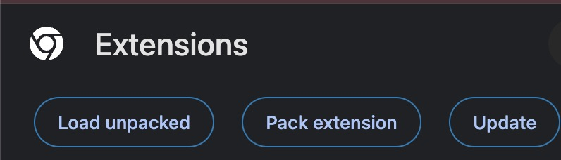

Add the X Bookmark Exporter to your browser in about two minutes. No coding, no command line.
Click here to download the ZIP. One click, that's the whole download.
Or, on the GIMMIE GitHub page, click the green Code button, then Download ZIP. (If someone shared a ZIP with you directly, just use that.)
On a Mac: double-click the downloaded ZIP. A folder appears next to it.
On Windows: right-click the ZIP and choose Extract All, then Extract. Double-clicking is not enough on Windows: that only opens a preview of the ZIP that looks like a folder but isn't one.
Either way you end up with a folder named gimmie-main with files inside it, including one called manifest.json.
Put this folder somewhere permanent (like your Documents), because GIMMIE runs from it. If you delete or move the folder later, the extension stops working.
In the address bar, type chrome://extensions and press Enter. On Edge, use edge://extensions.
You can also reach it from the menu: ⋮ → Extensions → Manage Extensions.
In Chrome and Brave, the Developer mode switch is in the top-right corner of that page. In Edge, it's in the left sidebar. Turn it on, and a new row of buttons will appear.
After Developer mode is on, you'll see new buttons. Click Load unpacked:

In the file picker, select the gimmie-main folder you unzipped in step 2 (the one containing manifest.json) and confirm.
GIMMIE now appears in your list. That's it, it's installed.
Click the puzzle-piece icon 🧩 near the address bar, then click the pin next to GIMMIE. Its icon will stay in your toolbar.
Go to x.com/i/bookmarks and click the GIMMIE icon. Your bookmarks load automatically. Search, filter, or sort to find a guide or thread, then export it as Markdown.
Drop that Markdown file into Claude, ChatGPT, or NotebookLM and ask it to apply the guide to your own project. That's the whole point: one bookmarked playbook becomes something your AI can actually use.
Developer mode isn't on yet. Flip the switch in the top-right of the Extensions page (step 4), then try again.
You picked the wrong folder, or (on Windows) you picked the ZIP itself, which only looks like a folder. Select the unzipped gimmie-main folder, the one that directly contains manifest.json. On Windows, make sure you extracted first: right-click the ZIP and choose Extract All.
The folder was probably moved, renamed, or deleted, or it was still inside the ZIP. Unzip it, put the folder in a permanent spot, and load it again from there.
GIMMIE tells you which of the two causes it is: either you aren't signed in to X in this browser, or your bookmarks list is genuinely empty. Fix the one it names, then click Start over in the popup. If GIMMIE shows its welcome screen instead of your bookmarks, you aren't on the bookmarks page yet, click Open My Bookmarks and it takes you there. X occasionally changes its site, which can require a GIMMIE update, if it keeps happening, please report it on the project page.
Download the new ZIP and unzip it. Delete the old gimmie-main folder, then move the new one into the exact same place with the exact same name. Finally, click the circular refresh arrow on GIMMIE's card on the Extensions page. Because the folder has the same name and location, the browser picks up the new version right away.
Heads up for Mac users: unzipping "over" the old folder doesn't merge anything, it just creates a second folder called gimmie-main 2. That's why you delete the old one first.
Chrome sometimes shows a popup at startup about developer mode extensions, listing GIMMIE with a Disable button. That warning is normal for any extension installed outside the Chrome Web Store. Close it or choose to keep the extension. If you already clicked Disable, go to chrome://extensions and flip GIMMIE's toggle back on.
Yes. Developer mode only lets you install extensions from a folder like this one. You can leave it on, or turn it off after installing, GIMMIE keeps working either way.